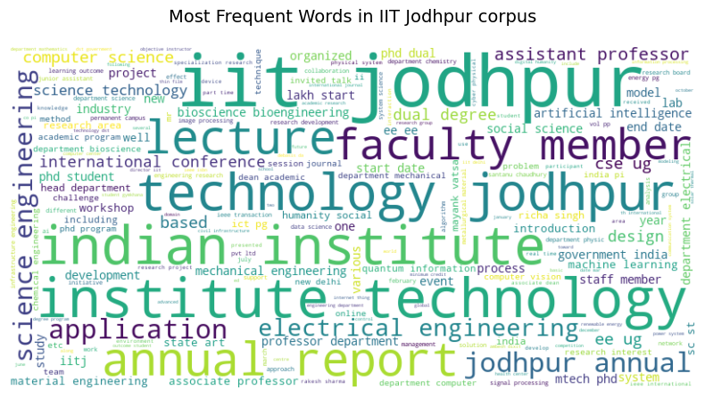
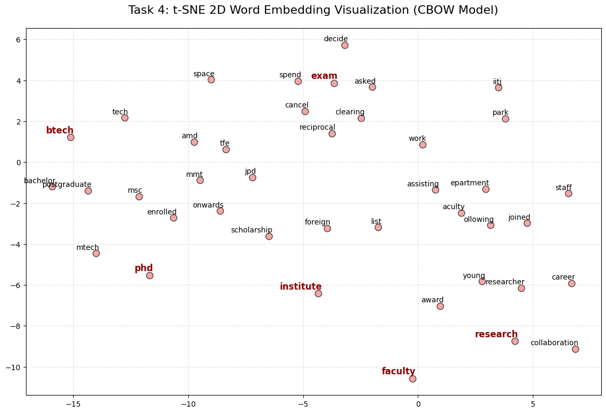

Problem 1: Word Embeddings from IITJ Data
Corpus is collected from IITJ webpages and PDFs, then preprocessed and used to train CBOW and Skip-gram models with negative sampling. Semantic quality is analyzed via nearest neighbors, analogies, and 2D projections (t-SNE/PCA).
Pipeline
- Web scraping + PDF extraction
- Tokenization, lemmatization, stopword filtering
- Raw and cleaned corpora export
- From-scratch NumPy Word2Vec training
- Cosine similarity semantic analysis
Artifacts
- iitj_raw_corpus.txt
- iitj_clean_corpus.txt
- prob1.ipynb
- Plots in report_assets/


Problem 2: Character-Level Name Generation
1000 Indian names are used for character-level supervision with SOS/EOS/PAD tokens. Three recurrent variants are trained and compared on novelty and diversity metrics.
Models
- Vanilla RNN (Embedding -> RNN -> Linear)
- BLSTM (bidirectional sequence modeling)
- Seq2Seq-style RNN with additive attention
Reported Metrics (500 samples each)
- Vanilla RNN: 97.19% novelty, 99.40% diversity
- BLSTM: 100.00% novelty, 73.79% diversity
- Attention: 75.75% novelty, 95.39% diversity
How To Run
Use PowerShell on Windows from this repository root.
python -m venv .venv
.\.venv\Scripts\Activate.ps1
pip install jupyter notebook numpy scipy matplotlib scikit-learn nltk requests beautifulsoup4 PyPDF2 wordcloud gensim torch indian-names
python -c "import nltk; nltk.download('punkt'); nltk.download('stopwords'); nltk.download('punkt_tab'); nltk.download('wordnet'); nltk.download('omw-1.4')"
jupyter notebookRun notebook cells in order: first prob1.ipynb, then prob2.ipynb. Refer to combined_report.tex for the formal write-up.